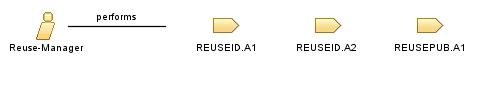

Role: Reuse-Manager
A reuse manager is someone who manages those artefact that can be reusable for other stakeholders
Relationships

Modifies
A list of potentially reusable artefacts to be further investigated
A list of reusable artefacts to be published to the repository
New artefacts published in the repository